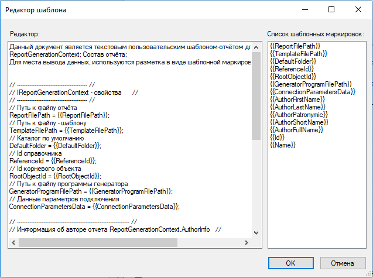

Пользовательский генератор отчётов |
В данном примере рассмотрен способ реализации пользовательского генератора отчётов.
Для создания пользовательского генератора отчётов необходимо:
1) Создать dll - сборку, в которой нужно реализовать интерфейс IReportGenerator или ICustomizableReportGenerator.
2) Скопировать полученную сборку 'ВашаСборка.dll' в каталог - место установки клиента T-FLEX DOCs.
3) Создать пользовательский генератор отчетов в справочнике "Генераторы отчётов" T-FLEX DOCs.
4) Создать новый отчёт и выбрать в качестве генератора созданный генератор отчётов.
5) Добавить шаблон к отчёту, который будет заполняться пользовательским генератором отчётов.
using System; using System.IO; using System.Windows.Forms; using TFlex.DOCs.Model.References.Reporting; using TFlex.Reporting; namespace CustomReporting { public class CustomReportGenerator : ICustomizableReportGenerator { public string DefaultReportFileExtension => "txt"; // Генерировать отчёт public void Generate(IReportGenerationContext context) { // Получаем путь к файлу отчёта string reportFilePath = context.ReportFilePath; // Получаем путь к файлу - шаблону string templateFilePath = context.TemplateFilePath; if (!File.Exists(templateFilePath)) throw new Exception("Не найден путь к шаблону"); // Получаем содержимое в файле - шаблоне string contentTemplate = File.ReadAllText(templateFilePath); if (string.IsNullOrEmpty(contentTemplate)) throw new Exception($"Пустой шаблон {Path.GetFileName(templateFilePath)}"); // Приведем объект интерфейса IReportGenerationContext к ReportGenerationContext // для возможности получения его параметров ReportGenerationContext rgc = (ReportGenerationContext)context; /* * Заполняем содержимое шаблона для вывода в отчёт */ // Путь к файлу отчёта SetValueInReport("ReportFilePath", rgc.ReportFilePath, ref contentTemplate); // Путь к файлу - шаблону SetValueInReport("TemplateFilePath", rgc.TemplateFilePath, ref contentTemplate); // Каталог по умолчанию SetValueInReport("DefaultFolder", rgc.DefaultFolder, ref contentTemplate); // Id справочника SetValueInReport("ReferenceId", rgc.ReferenceId, ref contentTemplate); // Id корневого объекта SetValueInReport("RootObjectId", rgc.ReferenceId, ref contentTemplate); // Путь к файлу программы генератора SetValueInReport("GeneratorProgramFilePath", rgc.GeneratorProgramFilePath, ref contentTemplate); // Данные параметров подключения SetValueInReport("ConnectionParametersData", rgc.ConnectionParametersData, ref contentTemplate); // Информация об авторе отчета if (rgc.AuthorInfo != null) { IAuthorInfo ai = rgc.AuthorInfo; // Имя автора SetValueInReport("AuthorFirstName", ai.AuthorFirstName, ref contentTemplate); // Фамилия автора SetValueInReport("AuthorLastName", ai.AuthorLastName, ref contentTemplate); // Отчество автора SetValueInReport("AuthorPatronymic", ai.AuthorPatronymic, ref contentTemplate); // Короткое имя автора SetValueInReport("AuthorShortName", ai.AuthorShortName, ref contentTemplate); // Полное имя автора SetValueInReport("AuthorFullName", ai.AuthorFullName, ref contentTemplate); } // Информация о справочнике отчёта if (rgc.Reference != null) { var rf = rgc.Reference; // Id справочника SetValueInReport("Id", rf.Id, ref contentTemplate); // Наименование справочника SetValueInReport("Name", rf.Name, ref contentTemplate); } // Шаблонная маркировка для заполнения контента отчёта данными из справочника string contentReport = "ContentReport"; // Выбор данных из справочника на основе режима 'Состав отчёта' switch (rgc.ContentType) { case ReportContentType.Default: // Реализация настроечного параметра - Состав отчёта: -> "По умолчанию" SetValueInReport(contentReport, "ReportContentType.Default - 'По умолчанию'", ref contentTemplate); break; case ReportContentType.Reference: // Реализация настроечного параметра - Состав отчёта: -> "Весь справочник" SetValueInReport(contentReport, "ReportContentType.Reference - 'Весь справочник'", ref contentTemplate); break; case ReportContentType.SingleObject: // Реализация настроечного параметра - Состав отчёта: -> "Один объект" SetValueInReport(contentReport, "ReportContentType.SingleObject - 'Один объект'", ref contentTemplate); break; case ReportContentType.ObjectList: // Реализация настроечного параметра - Состав отчёта: -> "Выбранные объекты" SetValueInReport(contentReport, "ReportContentType.ObjectList - 'Выбранные объекты'", ref contentTemplate); break; case ReportContentType.ObjectHierarchy: // Реализация настроечного параметра - Состав отчёта: -> "Выбранные объекты с иерархией" SetValueInReport(contentReport, "ReportContentType.ObjectHierarchy - 'Выбранные объекты с иерархией'", ref contentTemplate); break; case ReportContentType.InludedObjects: // Реализация настроечного параметра - Состав отчёта: -> "Выбранные и входящие объекты" SetValueInReport(contentReport, "ReportContentType.InludedObjects - 'Выбранные и входящие объекты'", ref contentTemplate); break; case ReportContentType.FirstLevelInludedObjects: // Реализация настроечного параметра - Состав отчёта: -> "Выбранные и входящие объекты первого уровня" SetValueInReport(contentReport, "ReportContentType.FirstLevelInludedObjects - 'Выбранные и входящие объекты первого уровня'", ref contentTemplate); break; case ReportContentType.ObjectHierarchyOnly: // Реализация настроечного параметра - Состав отчёта: -> "Только иерархия объектов" SetValueInReport(contentReport, "ReportContentType.ObjectHierarchyOnly - 'Только иерархия объектов'", ref contentTemplate); break; case ReportContentType.InludedObjectsOnly: // Реализация настроечного параметра "InludedObjectsOnly" SetValueInReport(contentReport, "ReportContentType.InludedObjectsOnly - 'Только входящие объекты'", ref contentTemplate); break; case ReportContentType.FirstLevelInludedObjectsOnly: // Реализация настроечного параметра - Состав отчёта: -> "Выбранные и входящие объекты первого уровня" SetValueInReport(contentReport, "ReportContentType.FirstLevelInludedObjects - 'Выбранные и входящие объекты первого уровня'", ref contentTemplate); break; } // Записать содержимое в файл отчёта File.WriteAllText(reportFilePath, contentTemplate); } public bool EditTemplateProperties(ref byte[] data, IReportGenerationContext context, IWin32Window owner) { throw new NotImplementedException(); } // Установить значение в содержимое отчёта private void SetValueInReport(string templateMark, object value, ref string contentReport) { if (value == null) contentReport = contentReport.Replace("{{" + templateMark + "}}", "NULL"); else contentReport = contentReport.Replace("{{" + templateMark + "}}", value.ToString()); } // Редактировать шаблон отчёта в форме public bool CustomizeDesign(ref byte[] data, IReportGenerationContext context, IWin32Window owner) { // Получаем путь к файлу - шаблону string templateFilePath = context.TemplateFilePath; if (!File.Exists(templateFilePath)) throw new Exception("Не найден путь к шаблону"); // Получаем содержимое в файле - шаблоне string contentTemplate = File.ReadAllText(templateFilePath); if (string.IsNullOrEmpty(contentTemplate)) throw new Exception($"Пустой шаблон {Path.GetFileName(templateFilePath)}"); // Вызвать форму редактора using (var editor = new CustomReportGeneratorEditor()) { // Установить текст редактора editor.EditorText = contentTemplate; // Заполнить список шаблонными маркировками editor.SetMarkList(new[] { "{{ReportFilePath}}", // Путь к файлу отчёта "{{TemplateFilePath}}", // Путь к файлу - шаблону "{{DefaultFolder}}", // Каталог по умолчанию "{{ReferenceId}}", // Id справочника "{{RootObjectId}}", // Id корневого объекта "{{GeneratorProgramFilePath}}", // Путь к файлу программы генератора "{{ConnectionParametersData}}", // Данные параметров подключения "{{AuthorFirstName}}", // Имя автора "{{AuthorLastName}}", // Фамилия автора "{{AuthorPatronymic}}", // Отчество автора "{{AuthorShortName}}", // Короткое имя автора "{{AuthorFullName}}", // Полное имя автора "{{Id}}", // Id справочника "{{Name}}" // Наименование справочника }); if (editor.ShowDialog(owner) != DialogResult.OK) return false; // Записать содержимое в файл отчёта File.WriteAllText(templateFilePath, editor.EditorText); } return true; } } }
Ссылки:
TFlex.ReportingIReportGenerator
TFlex.ReportingICustomizableReportGenerator
TFlex.ReportingIAuthorInfo
TFlex.DOCs.Model.References.ReportingReportGenerationContext
TFlex.DOCs.Model.ReferencesReference
using System.Windows.Forms; namespace CustomReporting { // Редактор для пользовательского генератора отчётов public class CustomReportGeneratorEditor : Form { private Button _okButton; private TextBox _editorTextBox; private ListBox _markListBox; private Label _markListLabel; private Label _editorLabel; private Button _cancelButton; public CustomReportGeneratorEditor() { InitializeComponent(); } // Текст редактора public string EditorText { get { return _editorTextBox.Text; } set { _editorTextBox.Text = value; } } // Список шаблонных маркировок public void SetMarkList(string[] markList) { _markListBox.Items.Clear(); foreach (var mark in markList) { _markListBox.Items.Add(mark); } } private void InitializeComponent() { this._okButton = new System.Windows.Forms.Button(); this._cancelButton = new System.Windows.Forms.Button(); this._editorTextBox = new System.Windows.Forms.TextBox(); this._markListBox = new System.Windows.Forms.ListBox(); this._markListLabel = new System.Windows.Forms.Label(); this._editorLabel = new System.Windows.Forms.Label(); this.SuspendLayout(); // // Ok_button // this._okButton.Anchor = ((System.Windows.Forms.AnchorStyles)((System.Windows.Forms.AnchorStyles.Bottom | System.Windows.Forms.AnchorStyles.Right))); this._okButton.DialogResult = System.Windows.Forms.DialogResult.OK; this._okButton.Location = new System.Drawing.Point(456, 406); this._okButton.Name = "_okButton"; this._okButton.Size = new System.Drawing.Size(80, 23); this._okButton.TabIndex = 0; this._okButton.Text = "OK"; this._okButton.UseVisualStyleBackColor = true; // // Cancel_button // this._cancelButton.Anchor = ((System.Windows.Forms.AnchorStyles)((System.Windows.Forms.AnchorStyles.Bottom | System.Windows.Forms.AnchorStyles.Right))); this._cancelButton.DialogResult = System.Windows.Forms.DialogResult.Cancel; this._cancelButton.Location = new System.Drawing.Point(545, 406); this._cancelButton.Name = "_cancelButton"; this._cancelButton.Size = new System.Drawing.Size(80, 23); this._cancelButton.TabIndex = 1; this._cancelButton.Text = "Отмена"; this._cancelButton.UseVisualStyleBackColor = true; // // Editor_textBox // this._editorTextBox.AcceptsReturn = true; this._editorTextBox.AcceptsTab = true; this._editorTextBox.Anchor = ((System.Windows.Forms.AnchorStyles)((((System.Windows.Forms.AnchorStyles.Top | System.Windows.Forms.AnchorStyles.Bottom) | System.Windows.Forms.AnchorStyles.Left) | System.Windows.Forms.AnchorStyles.Right))); this._editorTextBox.Location = new System.Drawing.Point(12, 38); this._editorTextBox.Multiline = true; this._editorTextBox.Name = "_editorTextBox"; this._editorTextBox.ScrollBars = System.Windows.Forms.ScrollBars.Both; this._editorTextBox.Size = new System.Drawing.Size(435, 355); this._editorTextBox.TabIndex = 2; this._editorTextBox.WordWrap = false; // // Mark_listBox // this._markListBox.Anchor = ((System.Windows.Forms.AnchorStyles)(((System.Windows.Forms.AnchorStyles.Top | System.Windows.Forms.AnchorStyles.Bottom) | System.Windows.Forms.AnchorStyles.Right))); this._markListBox.FormattingEnabled = true; this._markListBox.Location = new System.Drawing.Point(456, 38); this._markListBox.Name = "_markListBox"; this._markListBox.Size = new System.Drawing.Size(169, 355); this._markListBox.TabIndex = 3; this._markListBox.Click += new System.EventHandler(this.Mark_listBox_Click); // // MarkList_label // this._markListLabel.Anchor = ((System.Windows.Forms.AnchorStyles)((System.Windows.Forms.AnchorStyles.Top | System.Windows.Forms.AnchorStyles.Right))); this._markListLabel.AutoSize = true; this._markListLabel.Location = new System.Drawing.Point(453, 19); this._markListLabel.Name = "_markListLabel"; this._markListLabel.Size = new System.Drawing.Size(172, 13); this._markListLabel.TabIndex = 4; this._markListLabel.Text = "Список шаблонных маркировок:"; // // Editor_label // this._editorLabel.AutoSize = true; this._editorLabel.Location = new System.Drawing.Point(13, 19); this._editorLabel.Name = "_editorLabel"; this._editorLabel.Size = new System.Drawing.Size(58, 13); this._editorLabel.TabIndex = 5; this._editorLabel.Text = "Редактор:"; // // CustomReportGeneratorEditor // this.AcceptButton = this._okButton; this.CancelButton = this._cancelButton; this.ClientSize = new System.Drawing.Size(634, 441); this.Controls.Add(this._editorLabel); this.Controls.Add(this._markListLabel); this.Controls.Add(this._markListBox); this.Controls.Add(this._editorTextBox); this.Controls.Add(this._cancelButton); this.Controls.Add(this._okButton); this.Name = "CustomReportGeneratorEditor"; this.ShowIcon = false; this.Text = "Редактор шаблона"; this.ResumeLayout(false); this.PerformLayout(); } private void Mark_listBox_Click(object sender, System.EventArgs e) { // индекс в координатах int index = _markListBox.IndexFromPoint(((MouseEventArgs)e).Location); if (index <= 0) return; _editorTextBox.SelectedText = _markListBox.Items[index].ToString(); } } }

Данный документ является текстовым пользовательским шаблоном-отчётом для вывода значений из: ReportGenerationContext; Состав отчёта; Для места вывода данных, используются разметка в виде шаблонной маркировки "{{Шаблонная маркировка}}" // ---------------------------------------------------------------- // // ReportGenerationContext - свойства // // ---------------------------------------------------------------- // // Путь к файлу отчёта ReportFilePath = {{ReportFilePath}}; // Путь к файлу - шаблону TemplateFilePath = {{TemplateFilePath}}; // Каталог по умолчанию DefaultFolder = {{DefaultFolder}}; // Id справочника ReferenceId = {{ReferenceId}}; // Id корневого объекта RootObjectId = {{RootObjectId}}; // Путь к файлу программы генератора GeneratorProgramFilePath = {{GeneratorProgramFilePath}}; // Данные параметров подключения ConnectionParametersData = {{ConnectionParametersData}}; // ---------------------------------------------------------------- // // Информация об авторе отчета ReportGenerationContext.AuthorInfo; // // ---------------------------------------------------------------- // // Имя автора AuthorFirstName = {{AuthorFirstName}}; // Фамилия автора AuthorLastName = {{AuthorLastName}}; // Отчество автора AuthorPatronymic = {{AuthorPatronymic}}; // Короткое имя автора AuthorShortName = {{AuthorShortName}}; // Полное имя автора AuthorFullName = {{AuthorFullName}}; // ---------------------------------------------------------------- // // Информация о справочнике отчёта ReportGenerationContext.Reference // // ---------------------------------------------------------------- // // Id справочника Id = {{Id}}; // Наименование справочника Name = {{Name}}; // ---------------------------------------------------------------- // // Состав отчёта // // ---------------------------------------------------------------- // {{ContentReport}}